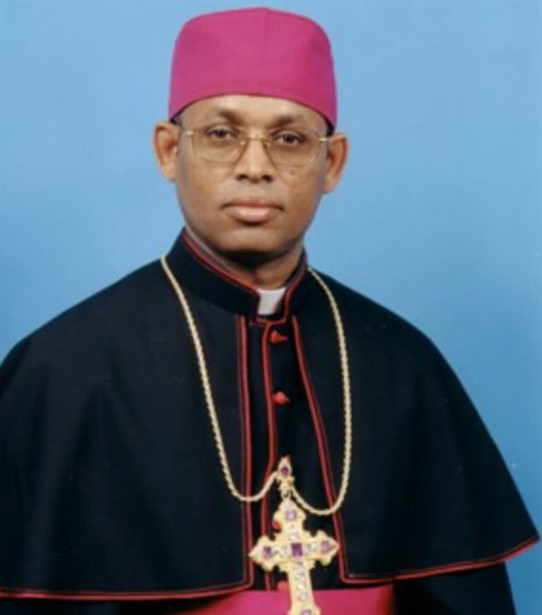

The Life and Ministry of Most Rev. Kidane Yebio, Bishop of Keren
Most Rev. Kidane Yebio, Bishop of Keren, has devoted his life to study, priestly ministry, pastoral service, and leadership. Born in Shnara, Eritrea, on January 25, 1958, his journey from local schools and seminaries to advanced studies in Rome prepared him for decades of service to the Church and the communities of the Eparchy of Keren.
Education and Formation
Bishop Kidane completed his elementary studies at St. Joseph School in Keren, run by the De La Salle Christian Brothers, from 1969 to 1973. In 1974, he entered the minor seminary in Keren. Two years later, he moved to the major seminary in Asmara, where he completed high school between 1976 and 1980. He then studied biology and other basic sciences at Asmara University from 1980 to 1982.
From 1983 to 1985, he studied at the Theological Institute in Asmara and was ordained a priest on June 30, 1985. He was later sent to Rome, where he earned a Licentiate degree in Biblical Theology at St. Thomas University (Angelicum) from 1986 to 1988. He continued his studies at the Pontifical Oriental Institute, earning a Licentiate in Oriental Canon Law between 1988 and 1990.
Pastoral Experience and Linguistic Work
During four summers while studying in Rome, Abba Kidane worked in Long Island, New York, assisting in a parish and gaining valuable pastoral experience. He also contributed to the translation of the Mass, parts of the New Testament, and other liturgical prayers into the Blin language. His scholarly work includes a study paper titled Religion of the Bilin People. He is fluent in Blin, Tigre, Tigrigna, Amharic, English, and Italian.
Service in the Eparchy of Keren
After returning from his studies, Abba Kidane served in a succession of pastoral, academic, and administrative roles. He was pastor of Haddish Addi from 1991 to 1992; director of the major seminary of Asmara from 1992 to 1993; and a teacher of Bible and Canon Law at the Asmara Theological Institute during the same period. From 1993 to 1995, he served as vicar general for the Western Eparchial Vicariate of Keren. He was also pastor of Shinnara, Jengeren, Halhal, and Afabet from 1993 to 1997, and later served as vicar general of the Eparchy of Keren and pastor of Bambi from 1996 to 2002.
Bishop of Keren
After serving as vicar general of the Eparchy of Keren from 1996 to 2002, Abba Kidane Yebio was consecrated Bishop of Keren on March 2, 2003. He became the second Bishop of Keren, bringing to the role a foundation in theology and canon law, broad pastoral experience, and a longstanding commitment to language, liturgy, education, and service.
ታሪኽ ህይወት ብፁዕ ኣቡነ ኪዳነ የብዮ፣ ጳጳስ ከረን
ብፁዕ ኣቡነ ኪዳነ የብዮ፣ ጳጳስ ከረን፣ ህይወቶም ንትምህርቲ፣ ክህነት፣ ጓስነታዊ ኣገልግሎትን መሪሕነትን ዝወፈዩ እዮም። ብ25 ጥሪ 1958 ኣብ ሽናራ፣ ኤርትራ ተወሊዶም። ካብ ከባብያዊ ኣብያተ ትምህርትን ሰሚናራትን ጀሚሩ ክሳብ ላዕለዋይ ትምህርቲ ኣብ ሮማ ዝበጽሐ ጉዕዞኦም፣ ንነዊሕ ዓመታት ንቤተ ክርስቲያንን ንማሕበረሰብ ኤጳርቅና ከረንን ንኸገልግሉ ኣዳልዩዎም።
ትምህርትን ምስንዳውን
ኣቡነ ኪዳነ ካብ 1969 ክሳብ 1973 ኣብታ ብኣሕዋት ክርስቲያን ደ ላ ሳል እትመሓደር ናይ ከረን ቤት ትምህርቲ ቅዱስ ዮሴፍ መባእታዊ ትምህርቶም ወዲኦም። ብ1974 ኣብ ከረን ዝርከብ ንኡስ ሰሚናርዮ ኣተዉ። ድሕሪ ክልተ ዓመት፣ ካብ 1976 ክሳብ 1980 ካልኣይ ደረጃ ትምህርቶም ናብ ዝወድኡሉ ናይ ኣስመራ ዓቢይ ሰሚናርዮ ተዛወሩ። ካብ 1980 ክሳብ 1982 ድማ ኣብ ዩኒቨርሲቲ ኣስመራ ባዮሎጂን ካልኦት መሰረታዊ ሳይንሳትን ተማሂሮም።
ካብ 1983 ክሳብ 1985 ኣብ ኣስመራ ኣብ ዝርከብ ትካል ስነ-መለኮት ተማሂሮም፣ ብ30 ሰነ 1985 ድማ ካህን ኮይኖም ተሸሙ። ድሕሪኡ ናብ ሮማ ተላኢኾም፣ ካብ 1986 ክሳብ 1988 ኣብ ዩኒቨርሲቲ ቅዱስ ቶማስ (ኣንጀሊኩም) መጽሓፍ ቅዱሳዊ ስነ-መለኮት ተማሂሮም ሊቸንሳ ኣማልኡ። ካብ 1988 ክሳብ 1990 ድማ ኣብ ጳጳሳዊ ትካል ምብራቓዊ መጽናዕቲ ትምህርቶም ብምቕጻል፣ ኣብ ምብራቓዊ ሕጊ ቤተ ክርስቲያን ሊቸንሳ ረኺቦም።
ጓስነታዊ ተመክሮን ኣበርክቶ ቋንቋን
ኣብ ሮማ እናተማህሩ፣ ንኣርባዕተ ክረምቲ ኣብ ሎንግ ኣይላንድ፣ ኒው ዮርክ፣ ኣብ ሓንቲ ሰበኻ ብምሕጋዝ ክቡር ጓስነታዊ ተመክሮ ኣጥርዮም። ንቅዳሴ፣ ንገለ ክፋላት ሓድሽ ኪዳንን ንኻልኦት ስርዓተ ኣምልኾ ጸሎታትን ናብ ቋንቋ ብሊን ኣብ ምትርጓም እውን ኣበርክቶ ገይሮም። ሃይማኖት ህዝቢ ብሊን ዘርእስቱ ናይ መጽናዕቲ ወረቐት ጽሒፎም። ብቋንቋታት ብሊን፣ ትግረ፣ ትግርኛ፣ ኣምሓርኛ፣ እንግሊዝኛን ጥልያንኛን ብቕልጡፍ ይዛረቡ።
ኣገልግሎት ኣብ ኤጳርቅና ከረን
ድሕሪ ትምህርቶም ምምላሶም፣ ኣባ ኪዳነ ብተኸታታሊ ጓስነታዊ፣ ኣካዳሚያውን ምምሕዳራውን ሓላፍነታት ኣገልጊሎም። ካብ 1991 ክሳብ 1992 ኣባ ሰበኻ ሓዲሽ ዓዲ፤ ካብ 1992 ክሳብ 1993 ዳይረክተር ዓቢይ ሰሚናርዮ ኣስመራን ኣብ ትካል ስነ-መለኮት ኣስመራ መምህር መጽሓፍ ቅዱስን ሕጊ ቤተ ክርስቲያንን፤ ካብ 1993 ክሳብ 1995 ጠቕላሊ ቪካር ምዕራባዊ ኤጳርቅናዊ ቪካርያት ከረን ኮይኖም። ካብ 1993 ክሳብ 1997 ኣባ ሰበኻ ሽናራ፣ ጀንገረን፣ ሃልሃልን ዓፋበትን ኮይኖም፣ ካብ 1996 ክሳብ 2002 ድማ ጠቕላሊ ቪካር ኤጳርቅና ከረንን ኣባ ሰበኻ ባምቢን ኮይኖም ኣገልጊሎም።
ጳጳስ ከረን
ካብ 1996 ክሳብ 2002 ጠቕላሊ ቪካር ኤጳርቅና ከረን ኮይኖም ድሕሪ ምግልጋሎም፣ ኣባ ኪዳነ የብዮ ብ2 መጋቢት 2003 ጳጳስ ከረን ኮይኖም ተቐብኡ። ከም ካልኣይ ጳጳስ ከረን፣ ኣብ ስነ-መለኮትን ሕጊ ቤተ ክርስቲያንን ዘጥረይዎ ፍልጠት፣ ሰፊሕ ጓስነታዊ ተመክሮን ንቋንቋ፣ ስርዓተ ኣምልኾ፣ ትምህርትን ኣገልግሎትን ዘለዎም ነዊሕ ዘመናዊ ተወፋይነት ሒዞም ናብዚ ሓላፍነት መጺኦም።